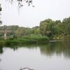

Достопримечательности Михайловского района
Михайловский район (официальный сайт  )
расположен на северо-западе Волгоградской области.
Районный административный центр – г. Михайловка.
)
расположен на северо-западе Волгоградской области.
Районный административный центр – г. Михайловка.
Расстояние до Волгограда 187 км.
Через территорию района проходит автомобильная трасса М6 Каспий Москва- Волгоград.
По территории Михайловского района протекает река Медведица, располагаются живописные озера и леса, которые можно посмотреть, проезжая мимо по трассе М6.
 )
)
Интерактивная карта Михайловского района с достопримечательностями (увеличить )
Река Медведица

Река Медведица — живописная малая река Волгоградской области. Протекает в том числе по территории Михайловского
района Волгоградской области и пересекат трассу М6 Каспий Москва-Волгоград.
На берегах этой живописной реки можно приятно отдохнуть во время путешествий на машине по Волгоградской области.